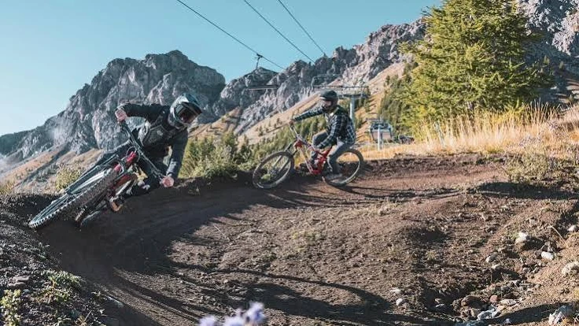
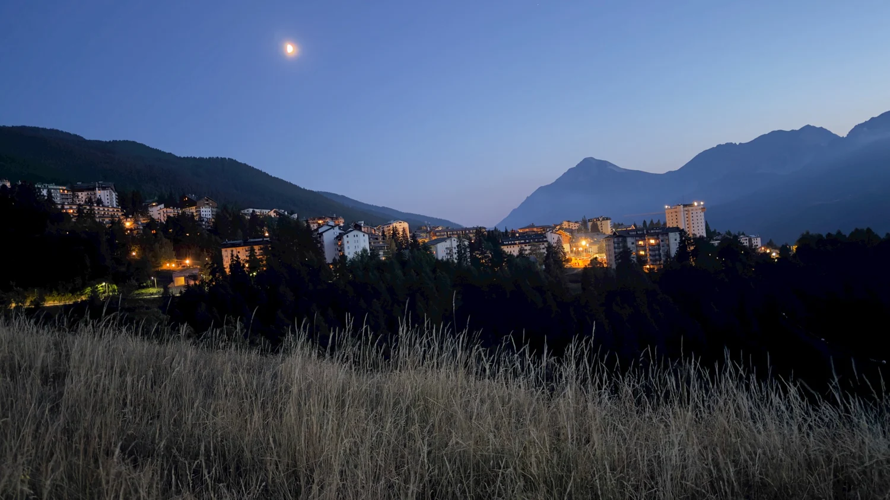
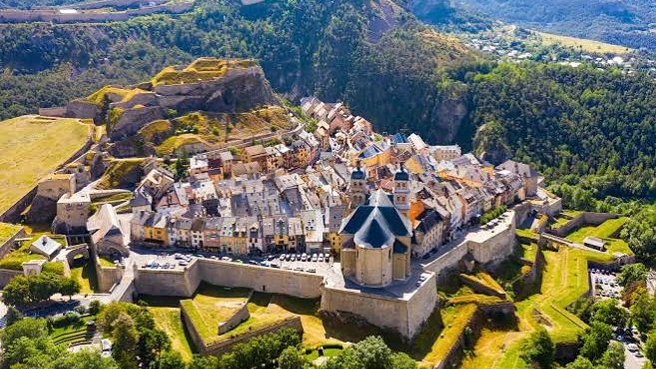
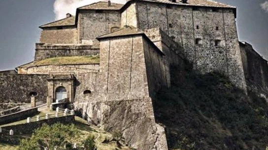
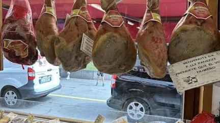

Zima
ZimaIdealny dzień na nartach
Narty z Jouvenceaux lub Clotes (ok. 5–8 min autem), obiad w Sportinia.
Informacje ↗Obudź się. Odkrywaj. Wróć do domu. Gdy pada deszcz lub śnieg, ciesz się filmami, grami planszowymi, herbatą, muzyką Sonos i ciepłym światłem. W słońcu ruszaj na przygodę.
 Zima
ZimaNarty z Jouvenceaux lub Clotes (ok. 5–8 min autem), obiad w Sportinia.
Informacje ↗ Zima
ZimaZimowe spacery, sanki w dozwolonych miejscach i rakiety śnieżne z przewodnikiem.
Informacje ↗
Lato i sportBike park, rowery elektryczne i droga Assietta. Wypożyczalnie Faure Sport i 3Sixty.
Informacje ↗ Lato i sport
Lato i sportPin Court w Sauze oraz obiekty w Sestriere i Bardonecchia.
Informacje ↗ Rodzina
RodzinaPółkolonie, tenis i multisport: Pin Court, PlayOff i Snowmaxx. Zapytaj o wiek i udział dzienny.
Informacje ↗ Rodzina
RodzinaAdventure Village, spacery, paintball i zabawy na śniegu; sprawdź ograniczenia wieku.
Informacje ↗RelaksFilmy na LG OLED, gry planszowe, herbata ziołowa, kawa, Sonos i ciepłe światło.
Informacje ↗ Relaks
RelaksSpa i masaże w Sauze oraz Durancia w Montgenèvre; sprawdź zasady wstępu.
Informacje ↗ Kulinaria
KulinariaCapanna Mollino, Capanna Kind, Chalet Capannina, Ciao Pais i Clot Bourget.
Informacje ↗ Natura
NaturaGran Bosco di Salbertrand: modrzewie, spacery i odpowiedzialna obserwacja zwierząt.
Informacje ↗
NaturaObserwuj niebo z bezpiecznego miejsca lub balkonu. Sprawdź chmury i fazę Księżyca.
Informacje ↗
KulturaMontgenèvre i Briançon: fortyfikacje Vaubana, spacery i kuchnia.
Informacje ↗ Kultura
KulturaSestriere, Cesana, Claviere, Pragelato, Bardonecchia, Oulx, Usseaux i Valle Argentera.
Informacje ↗
KulturaCapanna Mollino, forty Exilles i Fenestrelle, architektura alpejska i dziedzictwo olimpijskie.
Informacje ↗ Lato i sport
Lato i sportAssietta, Colle delle Finestre i Mont Cenis rowerem lub motocyklem; sprawdź ograniczenia.
Informacje ↗ Kultura
KulturaLetnie koncerty w Sportinia, muzyka w schroniskach i występy w miejscowości. Sprawdź program.
Informacje ↗
KulinariaTargi, pieczywo, sery i lokalne produkty.
Informacje ↗ Zima
ZimaNapój po nartach, w górach lub w miejscowości. Sprawdź godziny i ostatni wyciąg.
Informacje ↗Pomysły sezonowe: sprawdź oficjalne terminy.
Cesana–Sestriere · Bardonecchia · Sestriere
| Styczeń | Wydarzenia i turystyka ↗ |
|---|---|
| Luty | Wydarzenia i turystyka ↗ |
| Marzec | Wydarzenia i turystyka ↗ |
| Kwiecień | Wydarzenia i turystyka ↗ |
| Maj | Wydarzenia i turystyka ↗ |
| Czerwiec | Wydarzenia i turystyka ↗ |
| Lipiec | Wydarzenia i turystyka ↗ |
| Sierpień | Wydarzenia i turystyka ↗ |
| Wrzesień | Wydarzenia i turystyka ↗ |
| Październik | Wydarzenia i turystyka ↗ |
| Listopad | Wydarzenia i turystyka ↗ |
| Grudzień | Wydarzenia i turystyka ↗ |
Pociągiem do Oulx, następnie sprawdź autobusy do Sauze. Samochodem przez A32 lub otwarte drogi transgraniczne. Ładowanie auta na zadaszonym miejscu parkingowym w cenie dla gości.
Pociągi · Transport lokalny